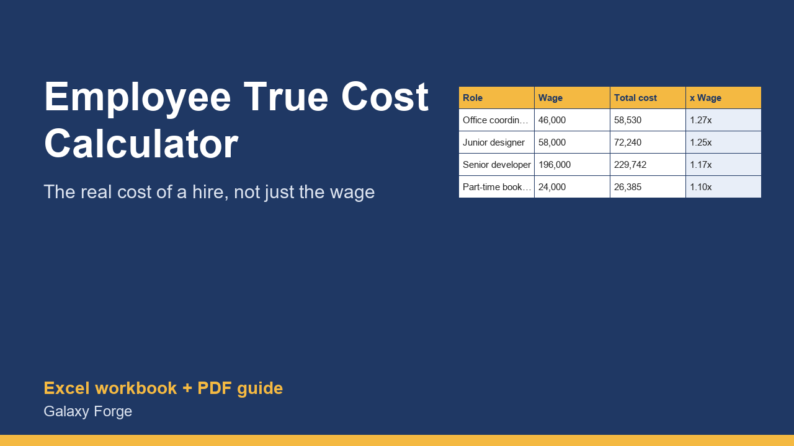

What a hire really costs beyond the salary: employer payroll taxes, benefits, workers' comp, equipment and paid time off, with the true cost per productive hour.
The salary is the smallest surprise in a first hire. On top of it an employer pays its share of Social Security and Medicare, federal and state unemployment tax, workers' compensation insurance, and usually health cover, a retirement match, equipment and software.
This workbook adds every one of those costs to a wage you choose, shows the total annual cost, the multiplier over the wage, and the cost per productive hour once paid holidays and time off are taken out, so you can price your work and budget the hire with real numbers.
The tax rates sit on their own sheet with the 2026 federal figures already filled in and every value editable, because state rates and wage bases differ by employer and change every year. A second sheet compares up to eight roles side by side.
1) On Rates, check each rate. The federal 2026 figures are filled in; replace the state unemployment rate and wage base with yours (from your state agency notice) and the workers' compensation rate with your insurer's. 2) On One Hire, enter the yearly wage and the employer-paid benefits. 3) Read the total cost, the cost multiplier and the cost per productive hour. 4) On Compare Roles, enter up to eight wages and benefit amounts to see all of them at once.
Price: $15, one-time. Download: employee_true_cost_calculator.xlsx (Rates, One Hire, Compare Roles) and this guide. Works in Excel 2016 or later, Excel for Mac and Excel on the web; opens in Google Sheets and LibreOffice.
New product, listed 2026-10-24: no sales or reviews yet. Example figures in the workbook are illustrative.
This workbook is a planning estimate, not payroll, tax or legal advice. Tax rates and wage bases change every year and state unemployment and workers' compensation rates differ by employer; confirm current figures with your payroll provider or accountant before budgeting a hire.